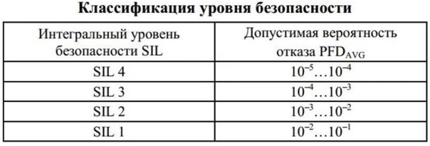

ПРОТИВОАВАРИЙНАЯ АВТОМАТИЧЕСКАЯ ЗАЩИТА
Противоаварийная автоматическая защита (ПАЗ) — это аппаратно-программный комплекс, который используется в критических приложениях для перевода системы в безопасное состояние.
КЛАССИФИКАЦИЯ УРОВНЯ БЕЗОПАСНОСТИ SIL
Каждый уровень SIL (от SIL — 1 до SIL — 4) характеризуется снижением допустимой вероятности отказа.SIL (Safety Integrity Level) — уровень полноты безопасности. В промышленности для критических приложений обычно используются уровни SIL — 2 и SIL — 3 (в зависимости от типа инструментальной функции).
ОСНОВНЫЕ ЗАДАЧИ И ФУНКЦИИ СПАЗ
Основная задача любой системы СПАЗ — перевод процесса в безопасное состояние при возникновении каких-либо проблем в его работе (выход технологических процессов за установленные границы, отказ оборудования, нештатные ситуации).
Основной функцией безопасности, для выполнения которой предназначена любая СПАЗ технологического объекта, является автоматическое изменение его состояния в сторону более безопасного, выполняемое рассматриваемой системой в случае появления потенциально опасного события (например, выхода параметров процесса за безопасные пределы). Содержанием этой функции является совокупность действий, включающих измерительное преобразование и/или контроль соответствующих параметров состояния объекта, а также формирование и передачу на объект такой последовательности заранее определенных управляющих воздействий, которые направлены на предотвращение или снижение вреда.
Система безопасности (СПАЗ) должна обеспечивать:
- Сбор аналоговой и дискретной информации от датчиков технологических параметров, и дискретных параметров состояния исполнительных механизмов и состояния аварийной вентиляции
- Выделение достоверной входной информации
- Анализ и логическую обработку входной информации
- Автоматическую выдачу сигналов двухпозиционного управления на исполнительные механизмы
- Дистанционное управление исполнительными механизмами со станции технолога-оператора РСУ при условии санкционированного доступа, либо со специальной оперативной панели СПАЗ
- Передачу оперативной информации от СПАЗ в РСУ для сигнализации, регистрации и архивирования (отклонение параметров, срабатывание исполнительных механизмов ПАЗ, и т.п.)
- Выделение первопричины останова технологического процесса
- Самодиагностику состояния технических средств системы ПАЗ
.jpg)
Архитетктура средств АСУТП
НАДЕЖНОСТЬ И ВРЕМЯ СРАБАТЫВАНИЯ СИСТЕМ БЕЗОПАСНОСТИ
Надежность и время срабатывания систем противоаварийной защиты обосновываются разработчиком АСУТП на основе требований технологической части проекта. При этом учитывается категория взрывоопасное технологических блоков, входящих в объект, и время развития возможной аварии.
В начало статьи